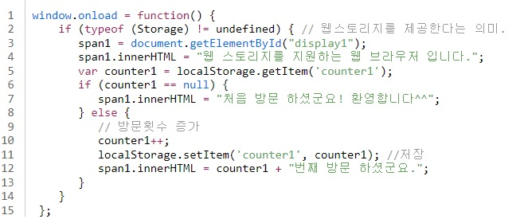

웹 스토리지를 이용한 방문자 카운팅(로컬 스토리지)
로컬 스토리지 삭제
웹 스토리지를 이용한 방문자 카운팅(세션 스토리지)
세션 스토리지 삭제
WebStorage- Local Storage
설명을 보시려면 Click!
'Local Storage'에 대한 설명
- 데이터 저장 시간에 제한이 없어 영구적으로 데이터를 보관이 가능하다.
- 도메인마다 별도의 저장영역을 생성한다.
- 다른 도메인끼리의 로컬 스토리지에는 접근이 불가능하다. (같은 도메인이라면 접근 가능)
- 웹 브라우저마다 별도의 로컬 스토리지를 가진다. (스토리지의 경로(Path)도 제각각임)
주요함수에 대한 설명
